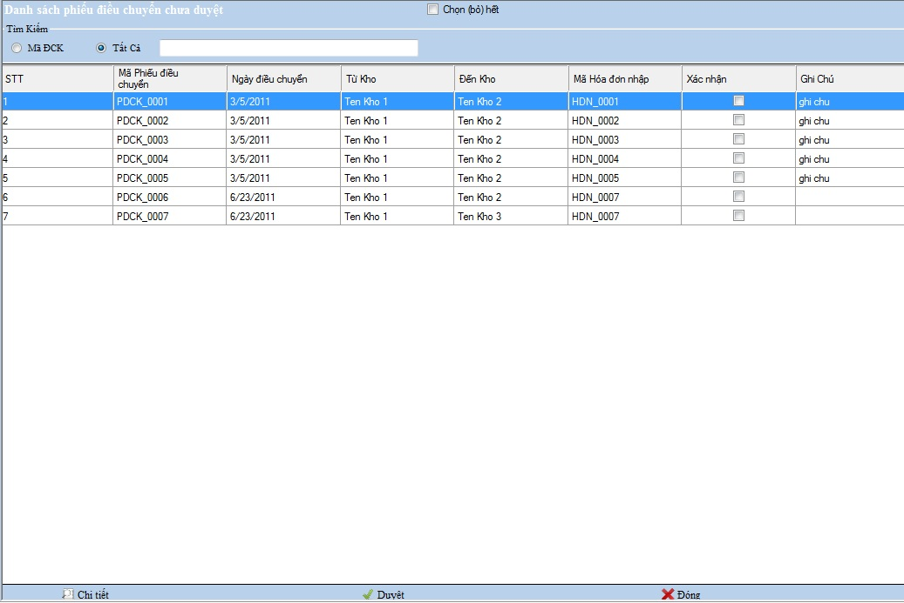
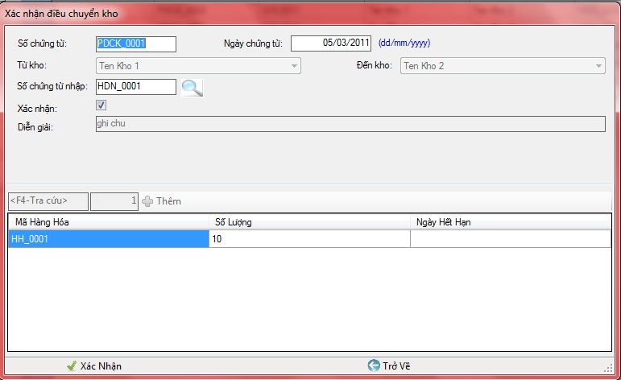

Cách thao tác với quản lý Xác nhận điều chuyển kho:
Vào Hệ thống ->Xác nhận điều chuyển kho
- Để Duyệt tất cả các phiếu điều chuyển kho kích chọn ô Chọn ( bỏ) hết -> Chọn Duyệt thanh công cụ bên dưới

Thanh tiêu đề: Chứa tên của nghiệp vụ đang làm việc.
Tìm kiếm: Chọn loại muốn tìm kiếm , bạn nhập vào tên hàng cần tìm .
Thanh công cụ : Chứa các công cụ phục vụ việc quản lý,theo dõi, bổ sung xác nhận điều chuyển kho
a.Chi tiết
Chọn nút chi tiết và khai báo các thông tin trên hộp thoại xuất hiện .
- Ô số chứng từ nhập hiển thị Mã hóa đơn nhập , hộp thoại xuất hiện.

- Chọn xác nhận để thực hiện thao tác xác nhận điều chuyển kho
- Dữ liệu hàng hóa của hóa đơn nhập hiển thị trong khung dưới.
- Kích đúp chọn nút Xác nhận ở thanh công cụ phía dưới để hoàn tất giao dịch .
Điền thông tin của danh mục theo hướng dẫn,những ô bắt buộc phải nhập nếu bạn để trống hệ thống sẽ báo lỗi như hình sau:

- Chọn Trở về ở thanh công cụ dưới để trở về Nghiệp vụ quản lý xác nhận điều chuyển kho